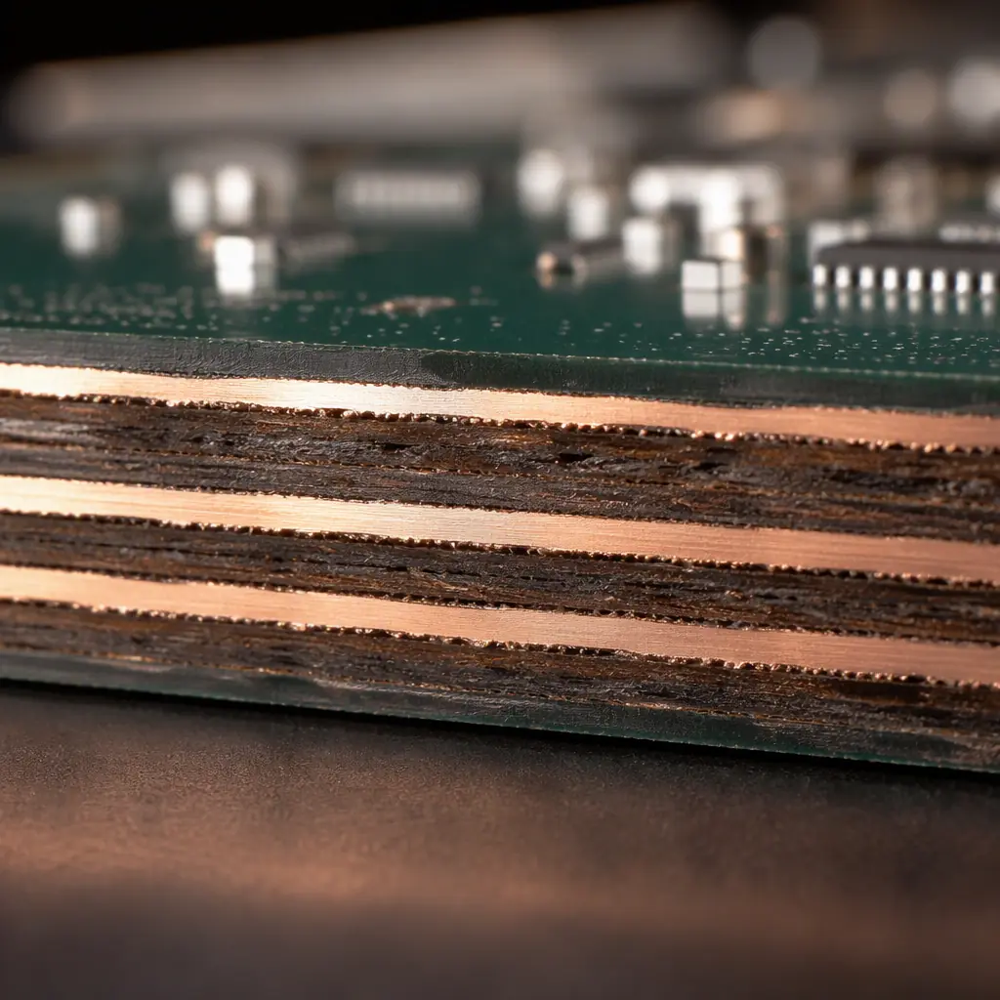
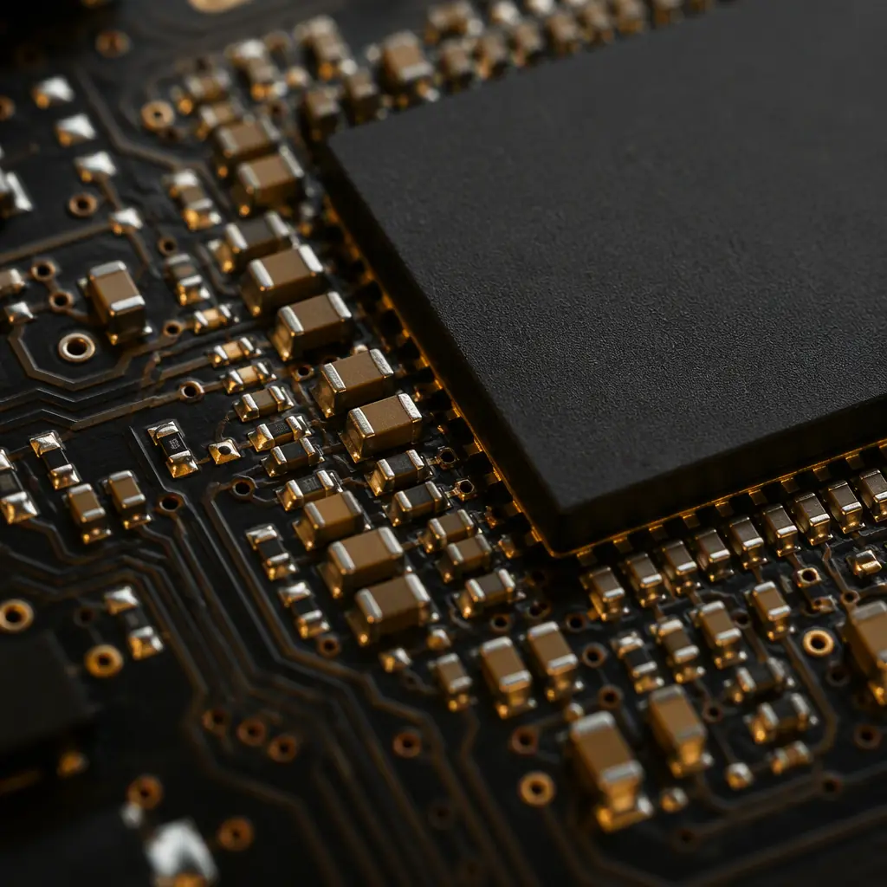
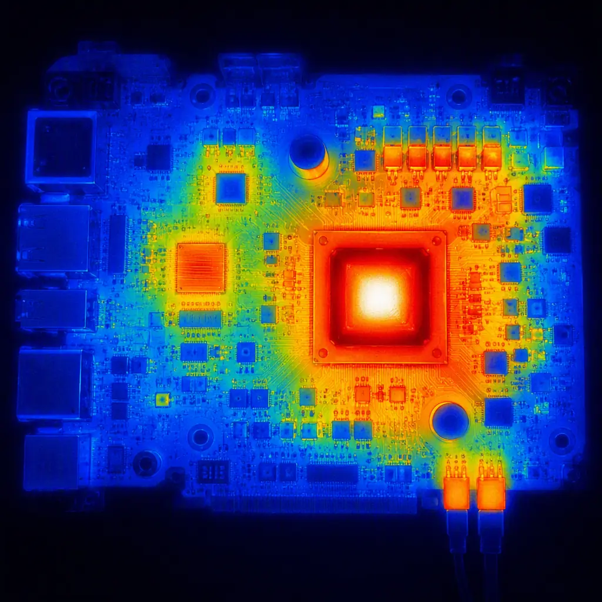

Ask a field-return engineer what actually kills modern electronics and the answer is rarely a signal integrity problem — it is a power delivery problem. A DDR5 interface with perfect routing still fails if the core voltage sags when 64 data lines switch simultaneously. An FPGA that simulates cleanly still resets randomly if its 0.85 V core rail rings above the absolute maximum. Power integrity (PI) is the discipline of designing the power delivery network (PDN) — the path from the voltage regulator through bulk capacitors, planes, vias, and decoupling capacitors to the silicon — so that voltage at the die stays inside tolerance during every transient.
At Huaxing PCBA we fabricate and assemble boards where PI failures are the most common field-return root cause we analyze in failure analysis — and the most preventable. This guide explains target impedance, how capacitors actually behave across frequency, why planes matter more than capacitor count, and the layout rules our DFM team checks on every high-speed board. It is written for design engineers and for buyers who need to know which supplier questions actually matter for power-sensitive products.

Target Impedance — The One Number That Defines the PDN
The entire PDN design method reduces to one calculation: the maximum impedance the power path may present, across all frequencies the load switches at. If the impedance stays below this target, the voltage drop under any transient stays within the allowed ripple.
The Formula: Ztarget = Vripple / Itransient. Example: a 0.85 V FPGA core with 5% allowed ripple (±42.5 mV) and a 10 A transient step needs Ztarget = 42.5 mV / 10 A = 4.25 mΩ. A DDR5 VDDQ rail at 1.1 V with 3% ripple and 4 A steps needs about 8 mΩ. These milliohm numbers are why PDN design is a plane and via problem — no discrete component alone can deliver milliohms.
The frequency range matters as much as the number. The PDN must hold its impedance target from DC up to the highest switching harmonic the load generates — for a 2.4 GHz DDR5 bus, that is well into the gigahertz range, where only the plane pair and on-die capacitance can help. The classic mistake is designing for DC and low frequency (bulk capacitance) and ignoring the mid-frequency band (1-100 MHz) where decoupling capacitors and plane resonance actually fight each other.
How Capacitors Really Behave — ESL and the 0.1 µF-per-Pin Myth
A capacitor is not a capacitor. Every real capacitor is a series RLC: the capacitance, plus its equivalent series resistance (ESR) and — critically — its equivalent series inductance (ESL), which comes from the part's construction and its mounting. ESL is what limits a capacitor's usefulness at high frequency, and it is dominated by the mounting geometry: a 0402 capacitor mounted with wide, short vias can have an effective inductance below 0.3 nH, while the same part mounted with thin, long traces and a distant via is closer to 2 nH — a 6× difference.
| Capacitor Role | Typical Values | Effective Frequency | What Limits It |
|---|---|---|---|
| Bulk / regulator output | 100-1000 µF (polymer, tantalum) | DC - 100 kHz | Regulator loop, ESR |
| Mid-frequency decoupling | 1-22 µF (MLCC, X5R/X7R) | 100 kHz - 10 MHz | ESL of package + mounting |
| High-frequency decoupling | 0.1-1 µF (MLCC 0402/0201) | 10 - 100 MHz | Mounting inductance |
| Plane pair + on-die | nF-pF distributed | > 100 MHz | Plane spacing, die capacitance |
The "0.1 µF per power pin" rule produces boards with plenty of capacitors and mediocre PDNs, because it ignores the self-resonant frequency of each part. A 0.1 µF MLCC in a 0402 with 0.5 nH total inductance self-resonates around 22 MHz; above that frequency it behaves as an inductor and its impedance rises. To cover a wide band you need a spread of values (e.g., 4.7 µF, 1 µF, 0.1 µF, 0.01 µF) arranged so their impedance curves overlap — plus the plane capacitance for the top octave. Our embedded passive technology guide covers the extreme version of this where capacitance moves into the laminate itself.

Plane Capacitance and the Stackup's Hidden Role
Above roughly 100 MHz, no discrete capacitor can help — mounting inductance makes every part look like an inductor. The only capacitance left is the plane pair: two copper planes separated by a thin dielectric act as a distributed capacitor. A 100 mm × 100 mm plane pair with a 4 mil FR-4 dielectric gives roughly 1.1 nF of pure, low-inductance capacitance — and its inductance is so low that it stays capacitive into the gigahertz range.
Place Power and Ground Planes Adjacent, Not Far Apart
The plane capacitance scales with area and inversely with dielectric thickness. Moving the VDD plane from layer 6 to layer 2 (adjacent to ground) with a 3-4 mil prepreg can increase plane capacitance 3-5× and cut plane inductance by the same factor. This is the single cheapest PI improvement available — it costs nothing in material and changes only the stackup. It is also why stackup design and PI are the same conversation: the stackup is the high-frequency PDN.
Plane Resonance — When the PDN Fights Itself
A plane pair is a resonant cavity. At the resonant frequency, which depends on plane dimensions and dielectric constant (for a 150 mm × 100 mm pair in FR-4, the fundamental is roughly 600-900 MHz), the impedance spikes — sometimes 10-50× the target. This is the anti-resonance that decoupling is meant to damp. Adding capacitors near the plane edges and at regular grid spacing (e.g., every 5-10 mm) dampens the cavity modes. In simulation terms: if you see a sharp impedance peak in the 100 MHz-1 GHz range, the fix is damping, not more capacitance value.
Decoupling Layout — Where the Capacitor Sits Matters More Than Its Value
Two identical capacitor values on the same board can differ 5× in effective performance purely from placement and via connection. The parasitic loop — capacitor pads → vias → planes — is the real component.
Minimize the Via Loop for High-Frequency Caps
Each capacitor should connect to the planes with two vias per pad where possible (or at minimum vias immediately adjacent to the pad), directly down to the plane pair. Every millimeter of trace between pad and via adds inductance. The goal: keep the loop inductance below ~0.5 nH for the 0.1 µF and smaller parts. In practice this means the high-frequency decoupling array sits directly under or within 100 mils of the power balls it serves — for BGAs, on the opposite side of the board under the package.
Distribute Bulk Capacitance, Don't Stack It at the Regulator
Bulk capacitors (10-100 µF) are often placed at the regulator output, but their job is to hold the mid-frequency transient — they must be distributed along the power path toward the load. A common failure pattern we see in review: all bulk caps clustered at the input connector, none near the processor, so the mid-band impedance between regulator and die is dominated by trace/plane inductance. Distribute 60-70% of bulk capacitance along the path, 30-40% at the source.
Via Stitching for Plane Current — Count, Don't Guess
Current moving between planes needs vias; too few vias create localized impedance bumps. Rule of thumb: for high-current rails, one stitching via pair per 100-200 mA of transient current, placed in a grid across the plane area. For a 10 A rail, that is 50-100 via pairs distributed — not clustered. Stitching vias also suppress plane resonance when spaced at λ/20 or tighter (in FR-4 at 1 GHz, that is every ~3 mm, impractical — so target the actual resonance frequencies you simulate). Our via technology guide covers via selection and sizing for power paths.

Thermal and PI Are the Same Problem at High Current
At tens of amps, the PDN's resistance heats the board, and the heat changes the PDN's behavior: copper resistivity rises ~0.4%/°C, MLCC capacitance derates with temperature and DC bias, and solder joints creep. A 3 oz copper plane carrying 20 A over a 100 mm path drops roughly 15 mV and dissipates 0.3 W — trivial electrically, but the hot spot it creates accelerates adjacent component aging. High-current rails need wider planes, heavier copper, or both — see our trace width and current capacity guide for the IPC-2152 math, and our thermal management guide for how heat spreading and PDN design combine.
Verifying the PDN — What to Ask For From Your Supplier
PI is verified in two complementary ways: DC resistance (the DC path integrity) and frequency-domain impedance (the AC behavior). Both are measurable, and both belong in your supplier qualification for power-sensitive boards.
DC Resistance Measurement on First Articles
A simple four-wire milliohm measurement of each power rail from the connector/regulator pad to the load's power balls catches plane slivers, insufficient stitching, and via voids — the DC defects that AC simulation never models. This is a standard part of our first article inspection for power boards. Ask your supplier for the measured rail resistance on the FAI report and compare it to your simulation.
Frequency-Domain Impedance — the PDN "Eye Chart"
A VNA measurement of the rail impedance from 10 kHz to 1 GHz produces the PDN impedance curve — the direct verification of your target-impedance design. Most fabs do not offer this, and most products do not need it on every lot; but for DDR5, high-end FPGA, or any rail with a milliohm target, insist on it for the first article and after any stackup change. It catches anti-resonance peaks that only show up in measurement.
What to Check in the Fabrication Notes
Three requirements belong in your fab notes for power-sensitive boards: (1) plane spacing per stackup held to ±10%, (2) minimum via count and stitching per rail as specified, (3) copper weight verification per layer (2 oz and above is where etch factor and thickness tolerance matter most). Our Gerber preparation guide shows how to encode these requirements so they survive the handoff.
Key Takeaway: PI failures look random — resets, bit flips, intermittent lockups — which is why they are misdiagnosed as software or silicon issues. If your product fails intermittently under load and the firmware is clean, suspect the PDN: measure the rail impedance, check the plane pair spacing, and count the stitching vias. The fix is usually a stackup or layout change, not a bigger regulator.
What This Means for Your Next Power-Sensitive Order
Power integrity is decided by a handful of measurable choices: target impedance defined before layout, a plane-pair-adjacent stackup, capacitor arrays placed for low loop inductance, and sufficient via stitching. None of these are exotic — they are disciplines. At Huaxing PCBA, our DFM team checks plane pairing, stitching via density, and decoupling placement on every high-speed review, and our microsection analysis verifies the copper and via quality that the PDN depends on. Pair this guide with our signal integrity rules for a complete high-speed design review, or send your files for a free DFM check that includes PDN verification items.